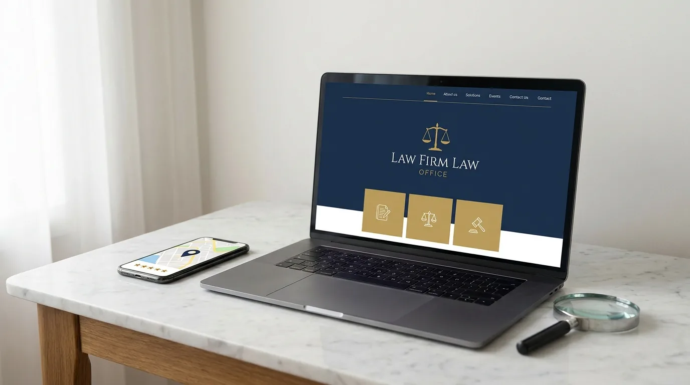

Como Abrir um Escritório de Advocacia: Passo a Passo
Você passou na OAB, acumulou alguma experiência e agora quer o próprio negócio. A pergunta que não sai da cabeça é uma só: como abrir um escritório de advocacia sem tropeçar logo na largada?
A dúvida é legítima. A faculdade de Direito ensina a peticionar, mas não ensina a empreender. Ninguém mostra ao bacharel como registrar uma sociedade, quanto custa uma estrutura mínima ou de onde vêm os primeiros clientes.
Atendemos escritórios em todos os estágios, do advogado solo à banca com dezenas de sócios. E percebemos um padrão: quem organiza a abertura direito cresce mais rápido, porque gasta energia captando clientes, e não apagando incêndio burocrático.
Este guia junta as duas pontas. Primeiro, a parte formal: tipo de sociedade, registro na OAB, CNPJ e enquadramento tributário. Depois, a parte que sustenta o negócio: custos reais, estrutura, marca e captação.
Ao final, você terá um mapa completo de como abrir um escritório de advocacia, na ordem certa e sem etapas esquecidas. Vamos começar pela decisão que define todas as outras.
Advogado autônomo ou sociedade: a primeira decisão
Antes de qualquer formulário, você precisa escolher a forma jurídica da sua atuação. Essa escolha muda o registro, os impostos e até a forma de cobrar honorários.
Existem três caminhos principais: atuar como advogado autônomo, constituir uma sociedade unipessoal de advocacia ou montar uma sociedade de advogados com outros colegas.
O advogado autônomo trabalha em nome próprio, sem pessoa jurídica. É o caminho mais simples e serve bem para quem está testando a carreira. Em contrapartida, a tributação como pessoa física pesa mais conforme a renda cresce.
A sociedade unipessoal de advocacia, criada pela Lei 13.247/2016, permite que um único advogado tenha CNPJ próprio. Você continua sozinho, mas paga imposto como empresa, o que costuma reduzir bastante a carga tributária.
Já a sociedade de advogados tradicional reúne dois ou mais sócios. É a estrutura natural para quem quer dividir custos, somar especialidades e construir uma marca maior que um nome individual.
| Critério | Autônomo | Sociedade unipessoal | Sociedade de advogados |
|---|---|---|---|
| CNPJ | Não tem | Tem | Tem |
| Tributação típica | IRPF (até 27,5%) | Simples Nacional | Simples Nacional |
| Registro na OAB | Só a inscrição individual | Registro do ato na seccional | Registro do contrato na seccional |
| Custo de manutenção | Baixo | Médio | Médio a alto |
| Indicado para | Fase de teste, poucos clientes | Advogado solo consolidando | Dois ou mais sócios |
Se os termos sócio e sociedade ainda se confundem na sua cabeça, vale a leitura do nosso artigo sobre a diferença entre sócio e sociedade em escritórios de advocacia. Ele explica o conceito que este guia aplica na prática.
Quando a sociedade compensa
A conta é menos misteriosa do que parece. Como autônomo, seus honorários pagam Imposto de Renda pela tabela progressiva: quanto mais você ganha, maior a fatia, chegando a 27,5%. Parte disso pode ser descontada na fonte, antes de o dinheiro cair na sua conta. Somam-se ainda o INSS e o ISS, o imposto municipal sobre serviços.
Na pessoa jurídica, o cenário muda. No Simples Nacional, regime que reúne vários impostos numa única guia mensal, a advocacia se encaixa no Anexo IV, uma das tabelas do regime. O imposto começa em 4,5% do faturamento e sobe conforme a receita cresce. Um detalhe do Anexo IV: a contribuição previdenciária patronal sobre a folha fica fora da guia e é paga à parte. Mesmo somando o que a empresa paga por fora, como essa contribuição e a mensalidade do contador, a economia costuma ser expressiva a partir de poucos milhares de reais por mês.
Por isso, boa parte dos advogados que decidem como abrir um escritório de advocacia opta já pela sociedade unipessoal. Ela oferece o benefício fiscal sem exigir sócio.
Registro na OAB e CNPJ: o caminho burocrático sem sustos
Definida a forma jurídica, começa a parte formal. Essa etapa é o coração burocrático de como abrir um escritório de advocacia, e a boa notícia é que o processo é mais previsível do que a fama sugere. A sequência abaixo vale para a sociedade unipessoal e para a sociedade de advogados.
O primeiro ponto que muita gente erra: sociedade de advogados não se registra na Junta Comercial. O registro acontece na seccional da OAB do estado onde o escritório terá sede, como determina o artigo 15 da Lei 8.906/94, o Estatuto da Advocacia.
Passo a passo do registro de sociedade na OAB
O roteiro completo tem seis etapas. Cumpra na ordem e o processo flui.
- Elabore o contrato social (ou o ato constitutivo, no caso da unipessoal). Ele define razão social, sede, objeto, capital e regras entre os sócios.
- Confira as exigências da sua seccional. Cada estado publica um roteiro próprio, com modelos de contrato e checklist de documentos.
- Protocole o pedido de registro na seccional, com o contrato assinado e as certidões dos sócios em situação regular.
- Aguarde a análise e a aprovação. A OAB verifica se o contrato respeita o Estatuto e o Regulamento Geral.
- Com o registro aprovado, solicite o CNPJ na Receita Federal, anexando o contrato registrado na OAB.
- Faça a inscrição municipal e opte pelo Simples Nacional, se fizer sentido para o seu faturamento projetado. A inscrição municipal é o cadastro do escritório na prefeitura, exigido para emitir nota fiscal de serviço e recolher o ISS.
⚠️ ATENÇÃO: A razão social da sociedade precisa conter o nome de pelo menos um advogado sócio e não pode usar nome fantasia criativo, como mandam o art. 16 do Estatuto da Advocacia (Lei 8.906/94) e o Provimento 112/2006 do Conselho Federal da OAB. "Silva & Andrade Sociedade de Advogados" funciona; "Justiça Já Advocacia Premium" será barrado no registro.
Enquadramento tributário: a escolha que muda a margem
Com o CNPJ emitido, o escritório precisa escolher o regime tributário: o conjunto de regras que define quais impostos você paga e como eles são calculados. As opções são o Simples Nacional (guia única simplificada), o Lucro Presumido (a Receita presume uma margem de lucro e tributa sobre ela) e o Lucro Real (imposto sobre o lucro efetivamente apurado, típico de empresas grandes).
Para quem está começando, o Simples Nacional quase sempre vence. O Lucro Presumido entra no radar quando o faturamento cresce, e essa é uma conta para fazer com o contador, caso a caso.
Não decida esse ponto sozinho. Um contador com experiência em escritórios jurídicos custa pouco perto do imposto que evita. Aliás, esse será seu primeiro fornecedor fixo, antes mesmo da sala e do site.
Quanto custa abrir um escritório de advocacia
Falar de dinheiro logo no início evita frustração depois. Nenhum plano de como abrir um escritório de advocacia fica de pé sem uma planilha honesta. Os custos para abrir escritório de advocacia se dividem em dois blocos: o investimento de abertura, pago uma vez, e o custo mensal de operação.
Os valores variam por estado e por padrão de estrutura. A tabela abaixo traz faixas realistas para um escritório enxuto começando em 2026.
| Item | Faixa de custo | Tipo |
|---|---|---|
| Registro da sociedade na OAB | R$ 500 a R$ 1.500 | Abertura |
| Contador (abertura + 1º mês) | R$ 500 a R$ 1.200 | Abertura |
| Identidade visual e marca | R$ 1.000 a R$ 5.000 | Abertura |
| Site profissional | R$ 2.000 a R$ 8.000 | Abertura |
| Mobiliário e equipamentos | R$ 3.000 a R$ 15.000 | Abertura |
| Sala (aluguel) ou coworking | R$ 400 a R$ 3.500/mês | Mensal |
| Contabilidade | R$ 300 a R$ 800/mês | Mensal |
| Software jurídico | R$ 100 a R$ 400/mês | Mensal |
| Anuidade OAB (por advogado) | R$ 840 a R$ 1.440/ano (provisione R$ 70 a R$ 120/mês) | Mensal |
| Marketing e captação | R$ 500 a R$ 5.000/mês | Mensal |
Somando as faixas mínimas de abertura, dá para tirar um escritório do papel com cerca de R$ 7 mil, chegando perto de R$ 10 mil se você reservar caixa para os primeiros meses de custo fixo. Estruturas maiores, com sala própria em endereço nobre, facilmente passam de R$ 40 mil.
💡 DICA VALIOSA: Nos primeiros meses, gaste o mínimo com metros quadrados e o máximo com visibilidade. Cliente nenhum escolhe advogado pela cadeira da recepção, mas muitos escolhem pelo que encontram no Google. Sala dá para alugar quando a agenda encher; a presença digital precisa existir antes do primeiro cliente.
Perceba um detalhe importante na tabela: marketing não é extra, é linha fixa do orçamento. É exatamente nesse ponto que muitos planos de como abrir um escritório de advocacia falham: reservam tudo para a estrutura física e nada para se tornar visível a quem procura um advogado.
Estrutura física e digital: o que você precisa de verdade
A imagem clássica do escritório com sala imponente, estante de códigos e mesa de mogno ficou no passado. Quem pesquisa como abrir um escritório de advocacia costuma superestimar a estrutura física e subestimar a digital. O que um escritório iniciante precisa, de verdade, é de estrutura para atender bem e ser encontrado.
Sede física, coworking ou modelo híbrido
Avalie com frieza quantos clientes você atenderá presencialmente por semana. Para muitas áreas, como previdenciário e digital, a maioria dos atendimentos já acontece por videochamada.
O coworking resolve bem o começo: endereço comercial para o registro, sala de reunião por hora e uma fração do custo do aluguel tradicional. Vários advogados começam ali e migram para sede própria quando a carteira sustenta o salto.
Se optar por sala física desde o início, cuide da fachada e da experiência de chegada. Nosso guia sobre fachada de escritório de advocacia mostra como transformar o ponto físico em ativo de credibilidade, dentro das regras da OAB.
Tecnologia mínima para operar como gente grande
A lista essencial é curta e cabe no orçamento de qualquer iniciante.
- Software jurídico para prazos, processos e tarefas, no lugar da planilha caótica
- Certificado digital para peticionar eletronicamente
- E-mail profissional com o domínio do escritório, nunca um endereço genérico
- Agenda online integrada para o cliente marcar reunião sem troca infinita de mensagens
- Backup em nuvem com criptografia, para proteger documentos e o sigilo profissional
Nada disso é enfeite. Cada item corta horas de tarefa administrativa por semana, e hora administrativa é hora que não vira honorário.
Se preferir encurtar o caminho com quem monta presença digital de escritório todos os dias, a JuriDigital pode assumir essa frente enquanto você cuida da papelada e dos processos. Uma conversa rápida com nosso time já desenha o plano do seu lançamento digital.
Montada a operação, falta o que realmente decide o jogo: ser encontrado por quem precisa de você. É aqui que a maioria dos novos escritórios trava, e é aqui que os que crescem se separam dos que apenas sobrevivem.
Identidade, presença digital e os primeiros clientes
Um escritório recém-aberto tem um desafio duplo. Precisa parecer confiável desde o primeiro dia e precisa aparecer para quem nunca ouviu falar dele. Marca resolve a primeira parte; presença digital resolve a segunda. Nos guias tradicionais sobre como abrir um escritório de advocacia, esse capítulo nem existe, e é justamente ele que define quem prospera.
Marca e identidade: o escritório que se apresenta sozinho
Antes de o primeiro cliente entrar em contato, ele já viu seu nome em algum lugar. Logotipo, paleta de cores, papelaria e perfis alinhados transmitem uma mensagem silenciosa: aqui existe método.
O investimento não precisa ser alto, mas precisa ser profissional. Nosso artigo sobre identidade visual para escritórios mostra o caminho completo, e o guia do cartão de visita do advogado detalha o que a OAB permite nesse material clássico que segue abrindo portas.
Presença digital: onde os clientes realmente procuram

Pense em como você mesmo contrata qualquer serviço hoje. Pesquisa no Google, olha o site, confere as avaliações. Seu futuro cliente faz igual ao procurar advogado.
Por isso, três frentes formam o mínimo digital de um escritório novo:
- Site profissional com áreas de atuação claras, página sobre a equipe e canal de contato direto
- Perfil no Google (antigo Google Meu Negócio) configurado, com endereço, horário e avaliações de clientes
- Um canal de conteúdo bem escolhido, seja blog, Instagram ou LinkedIn, alimentado com constância
Construir isso sozinho, enquanto se advoga, é possível, porém lento. Por isso a ordem importa: site e perfil no Google primeiro, canal de conteúdo em seguida, tudo antes da inauguração.
De onde vêm os primeiros clientes
Sem histórico e sem indicações acumuladas, o escritório novo capta de três fontes principais.
A primeira é a rede pessoal ativada com intenção. Avise colegas, ex-chefes, professores e familiares de que o escritório abriu e em quais áreas atua. Indicação continua sendo moeda forte na advocacia.
A segunda é ser encontrado na busca. Quem publica explicações claras sobre os problemas que resolve aparece no Google e constrói autoridade antes da primeira reunião. Ainda nessa frente entra o perfil no Google com avaliações: peça depoimento a cada cliente satisfeito desde o primeiro atendimento, porque vinte avaliações cinco estrelas pesam muito na comparação da busca local.
A terceira é o anúncio pago dentro das regras da OAB, que acelera a visibilidade enquanto os resultados orgânicos, as visitas que chegam de graça pelo Google, ganham força. O Provimento 205/2021 permite impulsionar conteúdo informativo, ou seja, pagar para que ele alcance mais pessoas. Essa combinação de velocidade com conformidade é exatamente aquilo de que um escritório novo precisa.
🚀 OPORTUNIDADE: A maioria dos escritórios novos passa os seis primeiros meses invisível, esperando indicação cair do céu. Quem chega ao mercado já com site, perfil no Google e conteúdo publicado começa a captar enquanto os concorrentes ainda discutem o logotipo. Largada digital forte é a vantagem mais barata que um iniciante pode comprar.
Estruturar a captação desde o primeiro dia muda a curva do negócio. Se quiser esse desenho pronto para a sua realidade, fale com a JuriDigital: nós criamos o plano de marketing do seu lançamento, do site ao primeiro anúncio, sem que você precise virar especialista em anúncios online.
Perguntas frequentes sobre abertura de escritório
Advogado recém-aprovado na OAB pode abrir escritório?
Pode. Não existe tempo mínimo de carteira para constituir sociedade ou atuar como autônomo. Na prática, o primeiro passo de como abrir um escritório de advocacia é o mesmo para o recém-inscrito e para o veterano: escolher a forma jurídica e, se optar por sociedade, registrar o ato na seccional. Recém-inscritos costumam começar como autônomos ou em sociedade unipessoal e crescem a partir daí.
Preciso de CNPJ para advogar?
Não. O advogado autônomo atua legalmente só com a inscrição na OAB. O CNPJ entra quando você constitui sociedade, e vale a pena principalmente pela economia tributária a partir de certo faturamento.
Quantos advogados são necessários para uma sociedade?
Desde 2016, basta um. A sociedade unipessoal de advocacia permite que um único profissional tenha pessoa jurídica própria. A sociedade tradicional exige dois ou mais sócios, todos advogados regulares.
Posso abrir escritório de advocacia em casa?
Pode, desde que o endereço conste no registro e a atividade respeite as regras do município. Muitos advogados registram a sede em casa ou em endereço de coworking e atendem clientes em salas de reunião por hora.
Escritório de advocacia pode entrar no Simples Nacional?
Pode, desde a Lei Complementar 147/2014. A advocacia é tributada pelo Anexo IV, com alíquota inicial de 4,5% sobre o faturamento, o que torna o regime vantajoso para a maioria dos escritórios em início de operação.
Qual o maior erro de quem está começando?
Gastar quase todo o capital na estrutura física e deixar a captação para depois. É o tropeço mais comum de quem estuda como abrir um escritório de advocacia olhando apenas para a burocracia. Escritório sem fluxo de clientes vira custo fixo com diploma na parede. Estrutura enxuta com presença digital forte é o arranjo que mais sobrevive ao primeiro ano.
Do registro ao primeiro cliente: seu plano em movimento
Recapitulando o caminho: escolha a forma jurídica com apoio de um contador, registre o contrato na seccional, emita o CNPJ, opte pelo regime tributário certo e monte uma estrutura enxuta que caiba no seu caixa.
Feito isso, passe para o que sustenta o negócio: marca profissional, site, perfil no Google e um canal de conteúdo ativo. É essa combinação que transforma um CNPJ novo em um escritório com agenda cheia.
Agora você sabe como abrir um escritório de advocacia de ponta a ponta, da papelada à captação. O que separa o plano da realidade é a execução das próximas semanas.
E você não precisa executar sozinho. A JuriDigital é especializada em marketing jurídico e já ajudou centenas de escritórios a nascerem visíveis, com marca, site e captação rodando desde o lançamento. Fale com a nossa equipe e abra as portas do seu escritório já com clientes chegando.